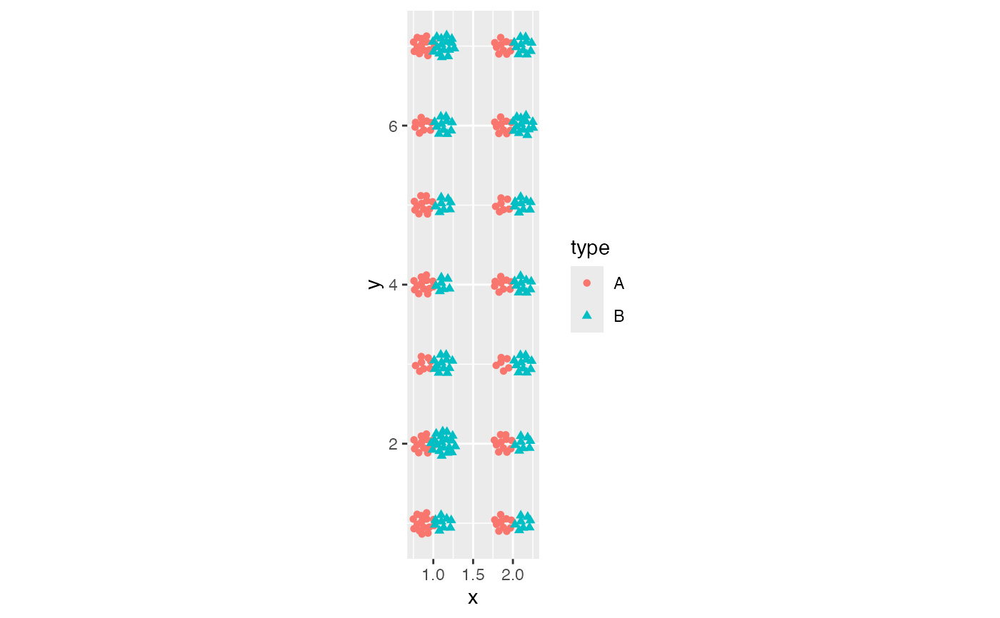
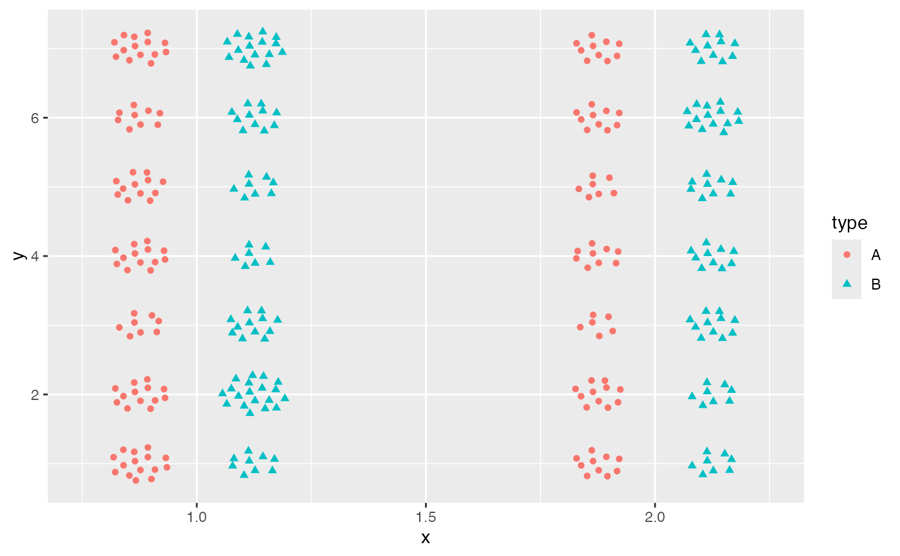
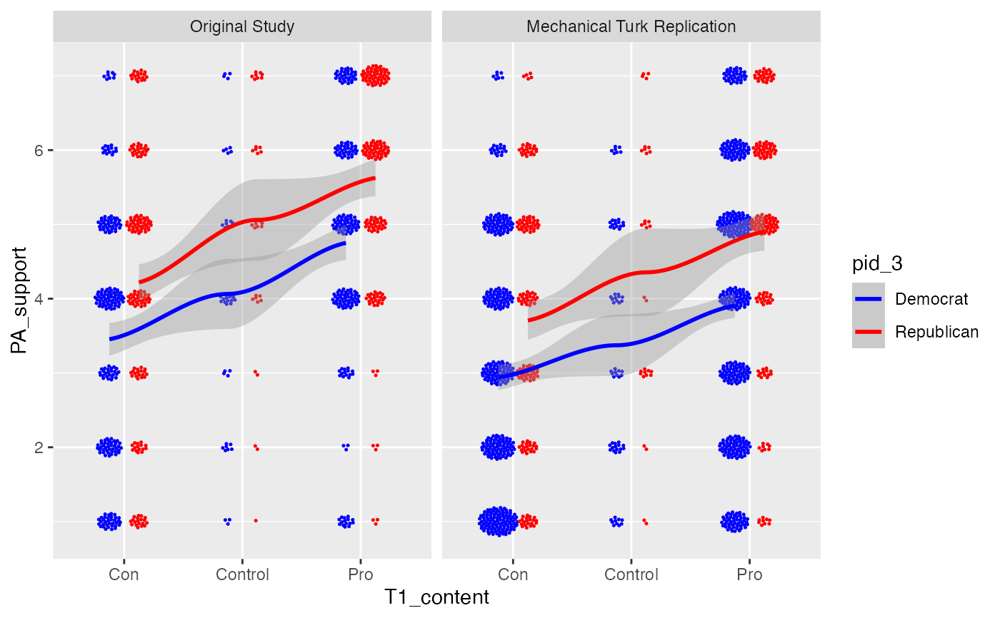

position_sunflowerdodge.RdThis function applies the sunflower position adjustment alongside the dodge position adjustment, arranging overlapping points per x, y, AND group into a sunflower pattern.
position_sunflowerdodge(width = 1, density = 1, aspect_ratio = 1)dodging width
seed density
aspect ratio adjustment
A ggproto object of class PositionSunflowerDodge
library(ggplot2)
# Use the sunflower dodge position function to arrange and dodge N points.
N <- 300
dat <- data.frame(
x = sample(1:2, size = N, replace = TRUE),
y = sample(1:7, size = N, replace = TRUE),
type = factor(sample(LETTERS[1:2], N, replace = TRUE))
)
# With coord_equal
ggplot(dat, aes(x, y, color = type, shape = type)) +
geom_point(position = position_sunflowerdodge(width = 0.5, density = 2, aspect_ratio = 1)) +
coord_equal()

# Without coord_equal, might want to play with aspect ratio to get a pleasing plot
ggplot(dat, aes(x, y, color = type, shape = type)) +
geom_point(position = position_sunflowerdodge(width = 0.5, density = 10, aspect_ratio = 0.25))

# As applied to the Patriot Act experiment
ggplot(patriot_act, aes(T1_content, PA_support, color = pid_3, group = pid_3)) +
geom_point(size = 0.25, position = position_sunflowerdodge(width = 0.5,
density = 10,
aspect_ratio = 6/7)) +
scale_color_manual(values = c("blue", "red")) +
facet_wrap(~sample_label) +
stat_smooth(position = position_dodge(width = 0.5))
#> `geom_smooth()` using method = 'loess' and formula = 'y ~ x'
#> Warning: Removed 3 rows containing non-finite outside the scale range (`stat_smooth()`).
#> Warning: pseudoinverse used at 0.99
#> Warning: neighborhood radius 2.01
#> Warning: reciprocal condition number 8.2576e-16
#> Warning: There are other near singularities as well. 4.0401
#> Warning: pseudoinverse used at 0.99
#> Warning: neighborhood radius 2.01
#> Warning: reciprocal condition number 8.2576e-16
#> Warning: There are other near singularities as well. 4.0401
#> Warning: pseudoinverse used at 0.99
#> Warning: neighborhood radius 2.01
#> Warning: reciprocal condition number 6.2213e-16
#> Warning: There are other near singularities as well. 4.0401
#> Warning: pseudoinverse used at 0.99
#> Warning: neighborhood radius 2.01
#> Warning: reciprocal condition number 6.2213e-16
#> Warning: There are other near singularities as well. 4.0401
#> Warning: pseudoinverse used at 0.99
#> Warning: neighborhood radius 2.01
#> Warning: reciprocal condition number 3.2884e-15
#> Warning: There are other near singularities as well. 4.0401
#> Warning: pseudoinverse used at 0.99
#> Warning: neighborhood radius 2.01
#> Warning: reciprocal condition number 3.2884e-15
#> Warning: There are other near singularities as well. 4.0401
#> Warning: pseudoinverse used at 0.99
#> Warning: neighborhood radius 2.01
#> Warning: reciprocal condition number 5.9887e-16
#> Warning: There are other near singularities as well. 4.0401
#> Warning: pseudoinverse used at 0.99
#> Warning: neighborhood radius 2.01
#> Warning: reciprocal condition number 5.9887e-16
#> Warning: There are other near singularities as well. 4.0401
#> Warning: `position_dodge()` requires non-overlapping x intervals.
#> Warning: `position_dodge()` requires non-overlapping x intervals.
